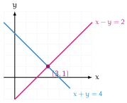

Apartado 7.4
Método gráfico y tipos de sistemas
Cada ecuación del sistema es una recta. La solución es el punto que pertenece a las dos rectas, es decir, su punto de corte. Para representar cada recta basta con calcular dos de sus puntos.

Según cómo sean las dos rectas, el sistema tiene una, infinitas o ninguna solución.
7.4.1
Clasifica estos sistemas:
- \(\left\{ \begin{array}{l} x + y = 3 \\ 2x + 2y = 6 \end{array} \right.\)
- \(\left\{ \begin{array}{l} x + y = 3 \\ x + y = 5 \end{array} \right.\)